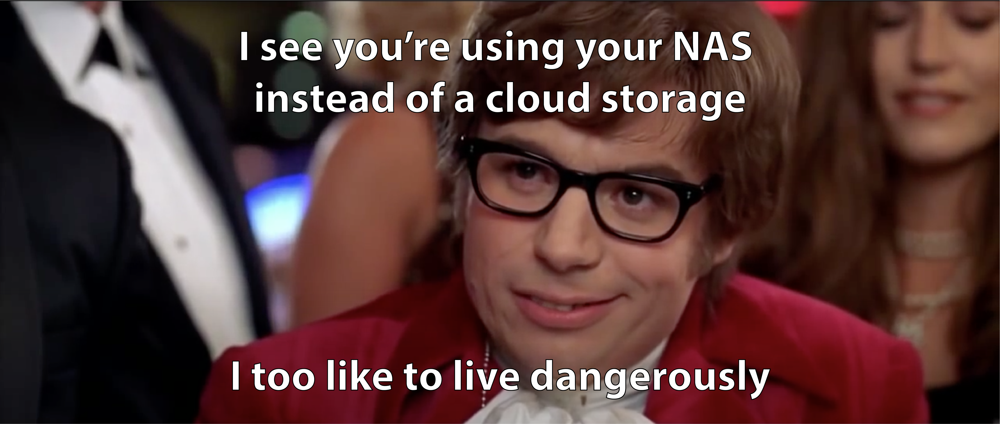
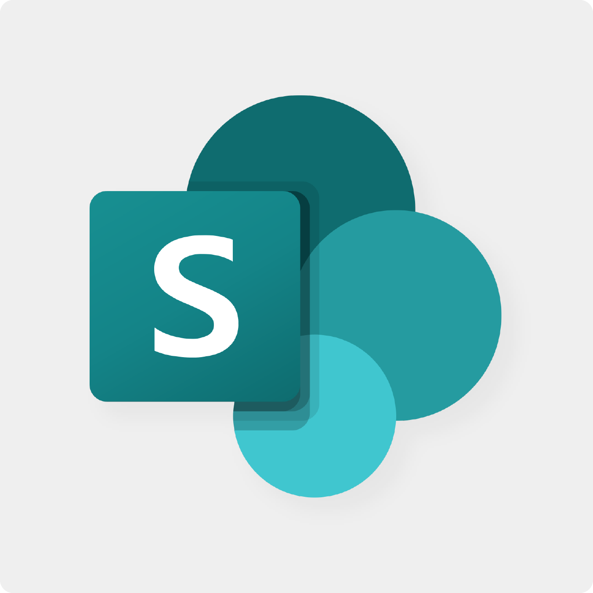
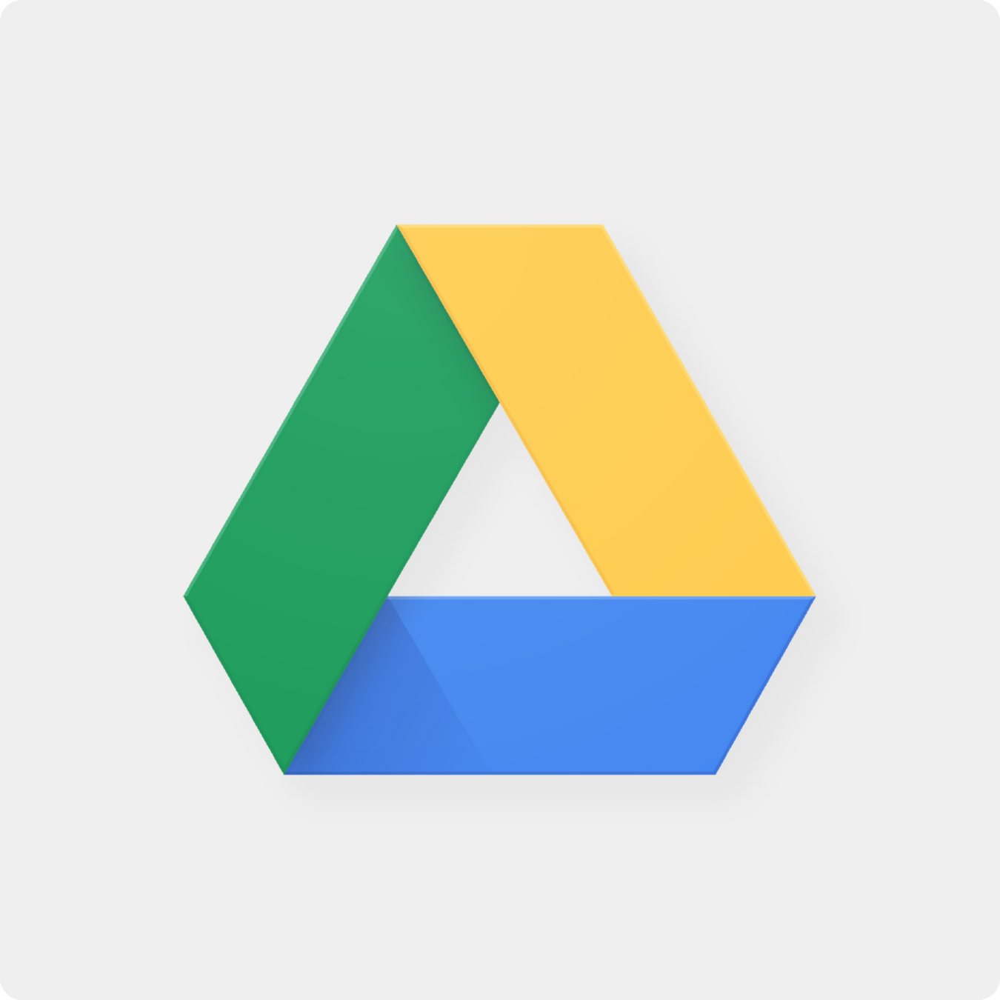
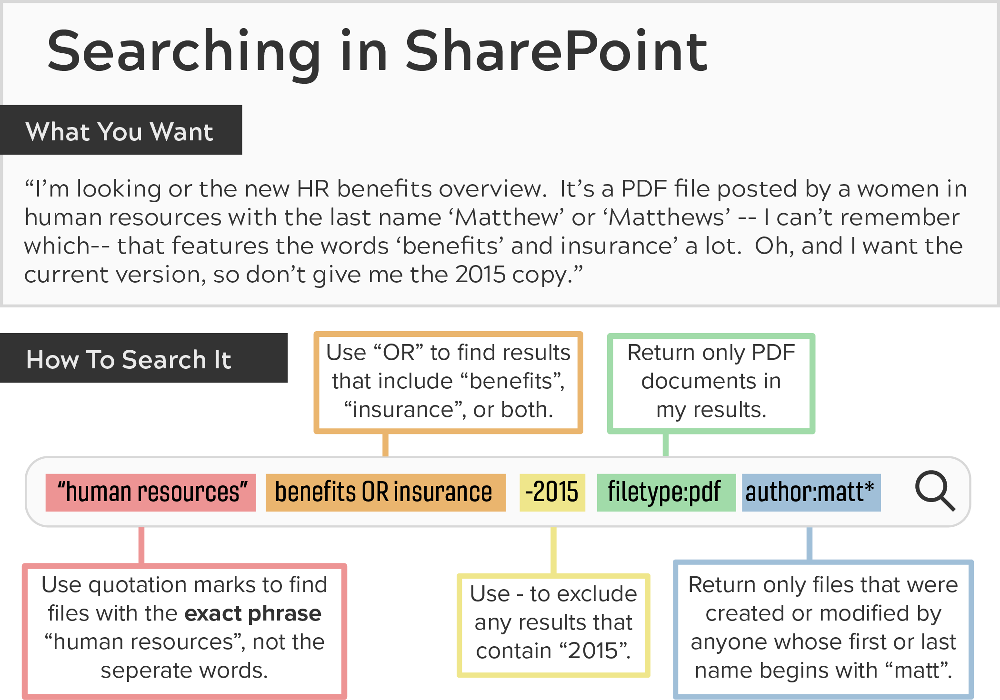
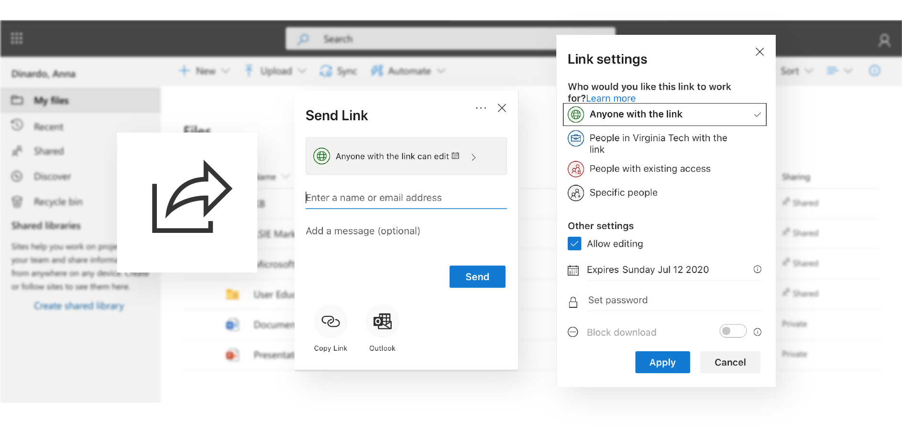

In this article:
Overview
- Cloud vs Nas
- Rule of Thumb
Sharepoint
- Popular Uses
- Special Features
OneDrive
Google Drive
Nas
File Storage
Where Should I Store My Files?
Created 06/11/2020
Copy Article Link
Print
Virginia Tech offers a variety of storage solution options for business related files. Knowing best practices for saving and storing your files may be confusing. This article will explain the features of a few of these resources and illustrate the decision making process to help determine which storage solution is best for you.
Overview
When it comes to file storage, there's no one-size-fits-all answer. File purpose, size, type, and contributors all have a factor in where it is best saved; however, our team has composed a basic rule of thumb so that your content is secure and accessible as storage solutions are continually changing.
Cloud vs Network Storage
You might have heard of storage solutions like OneDrive, Google Drive, and Sharepoint. These are all examples of cloud storage. The data is remotely maintained, managed, and backed up by these services and available to you over a network (often the internet).

Generally, it is best to store your files in the Cloud. Why?
- Usability - Many cloud storage services have desktop applications for Mac's and PC's. This allows you to drag and drop files between the cloud storage and your local storage.
- Collaboration - You can avoid sending files back and forth in email and instead collaborate in one location with your co-workers (reducing the risk of outdate versions)
- Access - Files stored in the cloud can be accessed by contributors from anywhere, not just the file owner.
- Security - VT approved cloud storage solutions are FERPA and PII compliant
Rule of Thumb
Cloud storage is often the best place to save data. For BAMS users, the most commonly used services are Sharepoint, OneDrive, and Google Drive.
Click on a cloud service icon below to see what kind of files it best serves:
-

-
-

Now that you know the basics of each cloud service, lets look more in depth at the functionality they offer.
Sharepoint is BAMS' most recommended option. Its versatile and dynamic platform can seem intimidating initially, but with an understanding of it's stucture and key features, it will likely become your go-to as well.
Popular Uses of Sharepoint
Fundamentally, Microsoft SharePoint is a browser-based collaboration and document/data management software solution It is designed for connectivity, and collaboration. SharePoint allows everyone to collaborate and synchronize daily business tasks and responsibilities from a centralized place.
Typically, SharePoint is used for one or more of the following purposes:
-
Collaboration
-
Document Management
-
File Organization
Special Features
Not only is Sharepoint a leader in managing a high volume of files and data, it also has an enormous list of special features that save you time and make collaboration a breeze. For a more in-depth look at these features, read Sharepoint Features Overview.
Version History
Versions history is one of SharePoint's best features. It automatically keeps a running track of all changes made to any file in your library. Version history does a lot, such as:
- 1. Removing the need to keep multiple copies of files while it's being developed or reviewed
- 2. Providing an audit trail of who did what to your files so you can track its progess
- 3. In extreme cases, it can recover a corrupted file
Co-authoring
SharePoint supports the ability to concurrently edit files in real time by multiple people, Microsoft calls it co-authoring. Co-authoring eliminates the problem of one person locking a file by not closing it and having multiple versions of a file at once.
Workflows
Send your documents through automated workflows that inform your colleagues when it's time to provide input or ask your manager to review and approve you files. To set up a business process unique to your office needs, submit a ticket and BAMS can help you get started with this feature.
Permissions and Access
Document libraries inherit the permissions from the site they live in, so when you create a library, the same people who can access the site can also access the library and its contents. This is called inherited permissions.
Libraries can have their own permissions, though. You can break inheritance meaning only certain people have access to a library in a site. You or the Site Owner choose who gets access.
Folders, sub-folders, and files can all have their own individual permissions. Special permissions should be used as needed to protect confidential or sensitive data.
Searching Files
SharePoint's search functionality makes finding your files incredibly easy. SharePoint does this by searching through the full text of documents as well as their metadata. Metadata included the file name, title, author, and any keywords or category systems you've put in place.
SharePoint search comes with a ton of additional features that enhance the precision of your search entry. Use this guide of the most efficient options at your disposal when searching for files in SharePoint:

Metadata
Folders seem natural, but they're an arbitrary way for organizing information. Think about the folder structure in your most commonly used library. Would you have set it up the same way? Does it make more sense to separate the folders by project? Year? Owner? Office branch?
Welcome to the world of metadata. Metadata in SharePoint document libraries let you tag files and content with relevant keywords, which then gives you the ability to sort, filter, and group those files whichever way make sense at the time. This take a little more time to set up, but it beats being stuck with a strategy based on the way one person liked it when they happened to start organizing the files.
Using metadata makes searchability much easier and is especially helpful when new people join your team: they don't have to learn an arbitrary folder scheme to get to the information that is relevant to them. Learn more about metadata in Sharepoint Metadata Guide
Think of OneDrive as your personal library
Just like a home library would not be as big as a public library, so is the relationship between OneDrive and SharePoint. OneDrive will contain your personal working files
OneDrive is similar to Google Drive in that it can be accessed by anywhere on any device.
Popular Uses of OneDrive
Here are some of the top reasons to use OneDrive:
-
File Backups
-
Editing Office Documents
-
Private Work Files
Special Features
Now that we have a good understanding of use cases for OneDrive, we can explore some of it's features that make accessing, editing, and saving documents more efficient.
Files On-Demand
This is a signature feature of OneDrive. It is used to save storage space across your device and improve visibility to all files. With Files On-Demand, you will see all the files you have access to, and they take of 0 storage until you commit to opening the files (where it is then brought down to your local computer from the cloud). Learn more about how to set up Files On-Demand in this article.
Privacy Settings
OneDrive offers a variety of privacy settings for your documents. Your files and folders are private until you decide to share them, and you can stop sharing at any time. If enabled, you can create anonymous external sharing links with choices to:
- - Allow editing
- - Expire a link after a certain date
- - Require a passcode
- - Block downloads
Sharing OneDrive files should be limited. If a file is intended for collaboration, we recommend storing it in SharePoint.

Like OneDrive, Google Drive is a service for your personal documents. Although you can't sync your google drive files with the previous cloud services, it is still available for you to store files in the cloud, giving you access to them anywhere on any device.
Special Features
Google Drive doesn't just store your files; it also allows you to create, share, and manage documents with its own productivity apps. Learn about how to make file storage more efficient in Google Drive with these special features:
Searching Files
With no surprise, Google Drive has great search functionality. When you search for a file or folder in Google Drive, potential results will immediately populate below the search box as you type. It's great for search with a specific word in the title or text found early in the content of the document.
File Recovery
Google keeps a complete history for all files created in the G Suite apps (e.g., Google Docs and Google Sheets). So, if you need to revert changes made to a file or restore to a previous version, you can easily do so. Non-native files have a maximum of 30 days or 100 iterations kept in history. Learn how to access Google Drive file history in this article
It would be very easy to throw $1000 into a pillow, and take $50 out everytime you went out to eat. However, it is not safe. It should be obvious to anyone that this money should be brought to the bank as soon as possible. Same goes for data that individuals create, manage, and use as a basis of their daily work. Data will could irretrievably lost in a hard drive disk error or damage to the computer.
When you decide to store you files in (NAS), you should know exactly what you are doing. Yes, it feels great to sit on a mountain of cash. However, if you want to go the safe way, you should let the experts in cloud services manage your data, instead of hoarding it locally.
With all this said, there are still a few reasons you might choose to store files in your local NAS. Do not store FERPA/PII documents in NAS
-
Small Files or Notes
-
Department Memos
-
Cloud Backups
Special Features
Unlike cloud services, NAS is file storage in it's most basic form. Still, there are a few features you should be using to keep your files secure and easily accessible.
File Syncing
There are not many features of NAS storage, but it is worth noting that you should be syncing any important documents to your OneDrive in order to keep your files secure and easily accessible. You can find more information on file syncing in our OneDrive Features article.